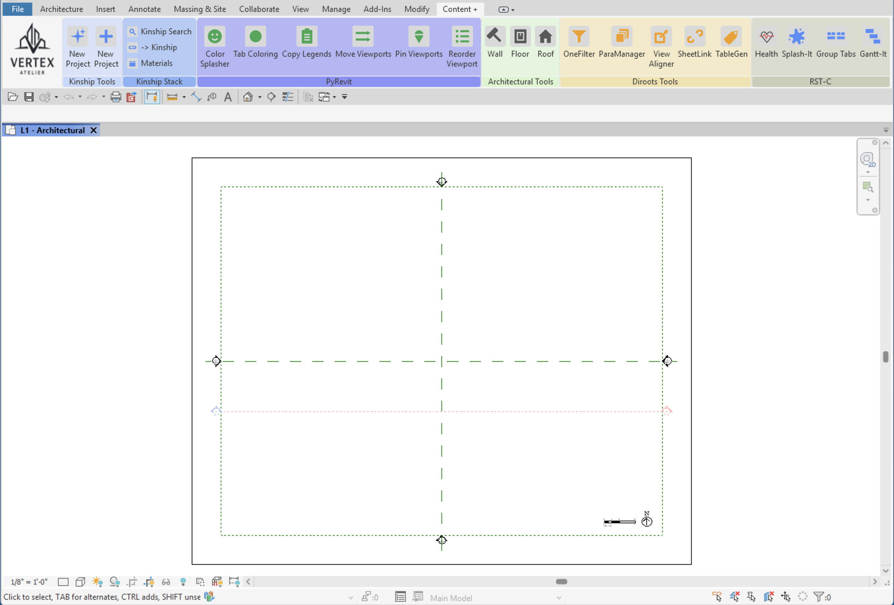
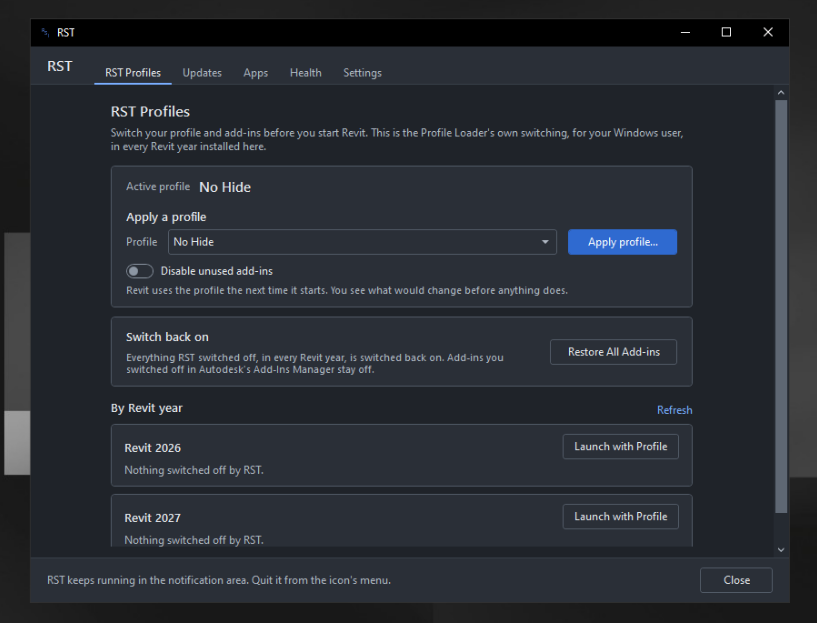

Profile Builder
Search the live Revit command catalogue, arrange panels and stacks, set branding, and export a self-contained profile for the team.
Builder documentationNative add-in for Revit 2025–2027
Admins build curated ribbon profiles. Every user gets the right tools in one click. No pyRevit, no external runtime, no hunting through tabs.

One add-in. A cleaner workflow.
RST turns a crowded ribbon into a deliberate toolset for each role, while keeping administration and everyday use straightforward.
Search the live Revit command catalogue, arrange panels and stacks, set branding, and export a self-contained profile for the team.
Builder documentationPreview a profile, check its required add-ins, and load the chosen ribbon without restarting Revit.
Loader documentationAdd company branding, panel colours, web links, email addresses, and file shortcuts to the same curated surface.
Appearance documentationHide tabs the profile does not need, keep its dependencies visible, and restore the previous setup when you switch back.
Ribbon Tools documentationInspect workstation and model health, review active time, and clean known junk locations. Activity data stays on the local PC.
Health documentationPrepare profiles before Revit starts, manage companion add-ins, check for updates, and review model activity outside Revit.
Tray documentationFrom curated to ready
Profiles travel as portable packages, so the person curating the ribbon and the person loading it can focus on different jobs.
Choose commands, organise panels, and add the branding and resources your team needs.
Export a self-contained .zip with the profile, icons, and branding included.
Import, preview, and apply the profile. Switching is live; Revit stays open.

Outside Revit, still RST
The small RST tray app brings profile switching, updates, companion apps, and health information together in one place. Nothing in Revit depends on it.
Clear by design
Install for one Windows account or the whole PC, then learn the Loader, Builder, ribbon tools, and tray at your own pace.
Read the installation guideReady when you are
One installer for Revit 2025, 2026, and 2027. Install only for the Revit years already on the PC.